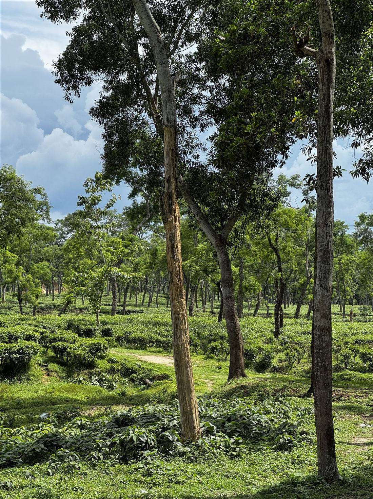
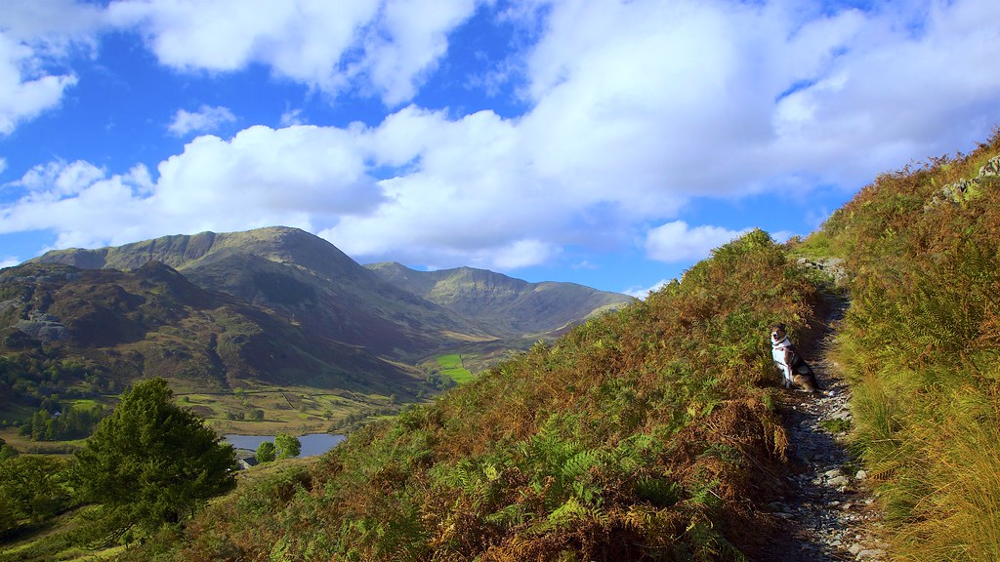

八ヶ岳の空気を、
そのまま食卓に。
山梨県北杜市大泉町、標高の高い八ヶ岳山麓に、自然食堂 心はあります。この土地の空気をそのまま食卓に運ぶように、からだにやさしい食事をご用意しています。
01
からだにやさしい食事を、ゆっくりと
玄米ごはんと季節の野菜を中心に、素材そのものの味わいを活かした食事づくりを大切にしています。毎日の食卓だからこそ、からだにやさしく、気負わず食べられるものをという思いで献立を考えています。
02
八ヶ岳山麓、澄んだ空気の中で
山梨県北杜市大泉町は、八ヶ岳の麓に広がる、自然豊かな土地です。澄んだ空気と広い空の下で、ゆっくりと食事の時間を過ごしていただけます。
03
季節ごとに表情を変える食卓
春夏秋冬、季節ごとに表情を変える野菜たちを使い、その時々の食卓をご用意しています。一年を通して、少しずつ違う顔を見せる献立をお楽しみください。
GALLERY
八ヶ岳の食卓、季節の表情
